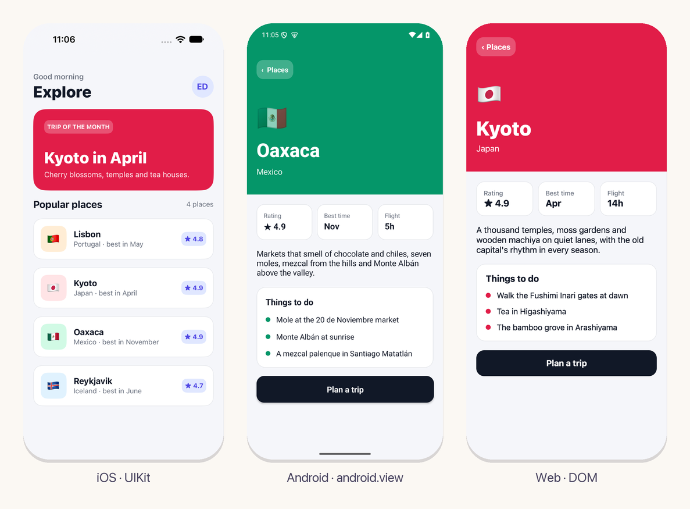
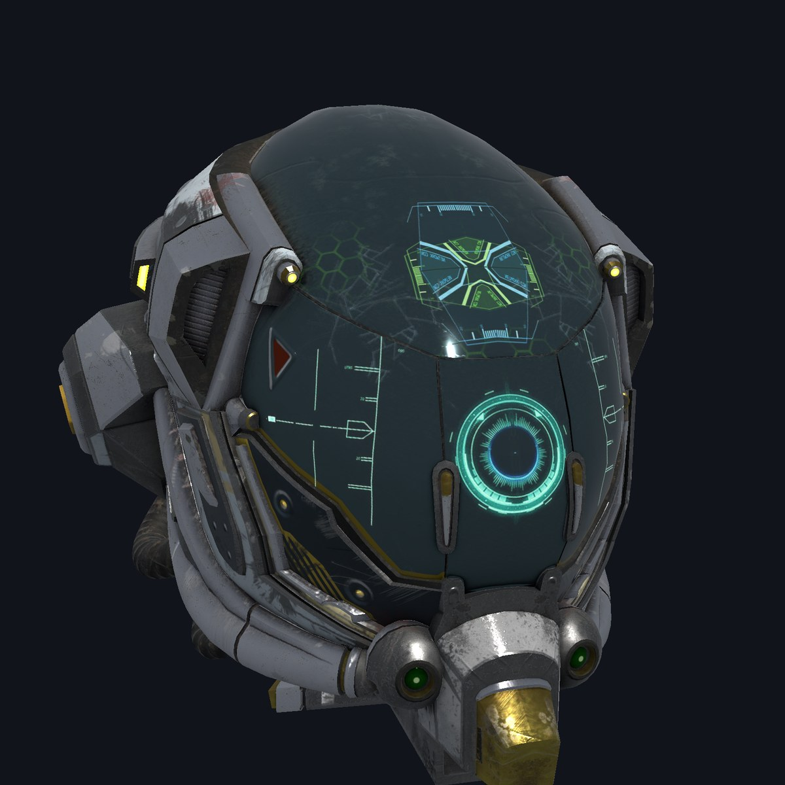

Escríbelo como un script. Compílalo como C.
Un lenguaje de sistemas sobre LLVM que se compila a sí mismo, con memoria explícita e interoperabilidad directa con C. Un solo compilador para escritorio, la web y celulares.
Homebrew: brew install eskiu-lang/eskiu/eskiu · Archivos de cada release para Mac con Apple silicon o Intel, Linux y Windows · Extensión de VS Code

#!/usr/bin/env -S eskiuc run import <io>; import <fetch>; import <json>; let r: Response; fetch("https://api.github.com/repos/llvm/llvm-project", &r); *JsonValue repo = Response_json(&r); printf("%s has %lld stars\n", JsonValue_as_cstr(json_get(repo, "full_name")), JsonValue_as_int(json_get(repo, "stargazers_count")));
$ ./stars.esk llvm/llvm-project has 41179 stars $ eskiuc stars.esk -O2 -o stars && ls -lh stars -rwxr-xr-x 194K stars
Un lenguaje, de scripts al silicio
El compilador, su biblioteca estándar, paquetes de GPU, machine learning y AR, y un framework de UI para apps nativas. Una sola herramienta, escrita en Eskiu, con herramientas que un agente puede manejar.
eskiuc
El compilador, sobre LLVM: código nativo, WebAssembly y headers de C.
Código de sistemas, scripts y bibliotecas
Biblioteca estándar
HTTP, JSON, archivos, procesos, async y regex, incluidos.
Herramientas de línea de comandos y servicios de red
Paquetes
gpu, scene, onnx, tflite, ar, video, audio y más, a un eskiuc add.
3D, machine learning y AR
ui
Apps nativas para iOS, Android, la web, macOS, Linux y Windows.
Apps desde un solo código
Agentes
ui agent maneja y prueba la app en ejecución en cada plataforma, y el compilador reporta sus diagnósticos en JSON.
Tu agente de código, construyendo, viendo y probando sin que nadie intervenga
Agentes y pruebas →Un solo código, nativo en cada pantalla
Escribe la interfaz una vez, como funciones de Eskiu. Dibuja UIKit en iOS, android.view en Android, el DOM en la web, y AppKit, GTK 4 y Win32 en el escritorio.
- Los controles de cada plataforma, con su accesibilidad
- Cada cambio en pantalla en un tercio de segundo con
ui serve - A la App Store y Google Play con
ui release

3D, machine learning y AR, a un paquete de distancia
Cómputo y render con WebGPU, modelos glTF con skinning, morphs y animación, ONNX Runtime y TensorFlow Lite, y ARKit y ARCore con la cámara en la GPU.
- Render físico (PBR), iluminación basada en imagen y sombras
- Llama 2 7B a 45 tokens por segundo en WGSL en una M4 Pro
- Cuadros de cámara, video y AR subidos como YUV y convertidos en la GPU

Tu agente de código construye, ve y prueba la app
Un mismo conjunto pequeño de operaciones maneja la app en la web, iOS, Android, macOS, Linux y Windows. La prueba controla el reloj, así que nada se mueve entre pasos.
- Lee el árbol y el layout, toma capturas, toca, escribe y hace scroll
- Los mismos archivos
.uitesten cada plataforma - Se quita al compilar para release
$ ui agent web tree "tap add" "type title Milk" "screenshot out.png" # tests/ui/counter.uitest expect count text "Count: 0" tap Increment repeat 2 tap Increment expect count text "Count: 3" expect screenshot counted 0.5% $ ui test web ios android macos
Dentro de un código existente en C o C++
export hace que una función se pueda llamar desde C, C++ o Rust, y --emit-header escribe su header. Un módulo entra a un motor archivo por archivo, y así llegó Eskiu a ViroReact.
- Structs por valor en el ABI de C de cada plataforma
- Bibliotecas estáticas y dinámicas para iOS y Android
- Sum types,
defery punteros nullable revisados sin costo en ejecución
export int checksum(*uint8 data, int n) { int sum = 0; for (i in 0..n) sum = sum * 31 + data[i]; return sum; } $ eskiuc lib.esk --emit-header lib.h $ eskiuc lib.esk -o liblib.a
Corre dentro de ViroReact.
ReactVision usa Eskiu en ViroReact: ≈85% menos memoria en su motor, el tracker detrás de su AR en la web y su detección de objetos en iOS y Android.
Tracking de AR en el navegador
El tracker visual-inercial de ViroReact corre sobre un motor escrito en Eskiu y compilado a WebAssembly. Su núcleo de visión por computadora calcula los mismos bits que el C++ al que reemplazó.
Un núcleo de detección para iOS y Android
La detección de objetos de ViroReact es un solo núcleo en Eskiu sobre ONNX Runtime en las dos plataformas. En Android, sus puntos de entrada JNI también son Eskiu.
 ReactVision
ReactVision
Cerca de C, con lo que a C le falta.
Eskiu conserva el modelo de memoria y de llamadas de C, y suma lo que la gente va a buscar a otros lenguajes. Es más joven que todos estos, y lo dice.
| Eskiu | C | Zig | Rust | Go | |
|---|---|---|---|---|---|
| Memoria | Manual, con defer | Manual | Manual, con defer | Ownership, verificado | Recolector de basura |
| Llamar a C | extern, structs por valor en la ABI de cada plataforma | Nativo | @cImport | extern "C", bindgen | cgo |
| Genéricos | Monomorfizados, con interfaces como límite | Macros | comptime | Traits | Parámetros de tipo |
Tipos suma, match exhaustivo | Sí | No | Uniones etiquetadas | Sí | No |
| Seguridad ante null | Opcional, ?*T | No | Opcionales | Option | No |
| Correr un archivo como script | eskiuc run, shebang | No | zig run | Con Cargo | go run |
| async / await | Sí | No | Con std.Io, sin palabras clave | Sí | Goroutines |
| Madurez | 0.15, joven | Décadas | Antes de 1.0 | Estable desde 2015 | Estable desde 2012 |
Pruébalo en el navegador.
Edita el programa y córrelo. El servidor lo compila con LLVM y lo ejecuta con el mismo eskiuc run.
SALIDA
En sandbox: sin red, con límites de tiempo y memoria, y salida acotada.
De hello a async y bare metal.
El libro es gratis y está en línea. El código que compila con 0.15.0 sigue compilando en cada 0.15.x (política de estabilidad).
Una nota del desarrollador
Aprendí a programar con Ruby, pero mientras más construía, más encontraba C debajo de todo, incluso de Ruby y Python. Le agarré cariño a su sencillez. Rust y Zig están bien hechos, pero para mi trabajo siempre me parecieron más complicados de lo necesario.
Así que escribí el lenguaje que quería: la sencillez de C, con las comodidades que buscaba en otros lenguajes. Hoy se compila a sí mismo y corre en producción en ReactVision. Si construyes algo con él, me gustaría saberlo.
Hice Eskiu con amor y cuidado, y espero que lo disfrutes tanto como yo he disfrutado construirlo.
Eduardo DorantesCreador de Eskiu
Te presentamos a Tiny.
El gatito de cada página está dibujado a partir de Tiny, que existe de verdad: con las patas sobre la mesa, mirando lo que escribes.